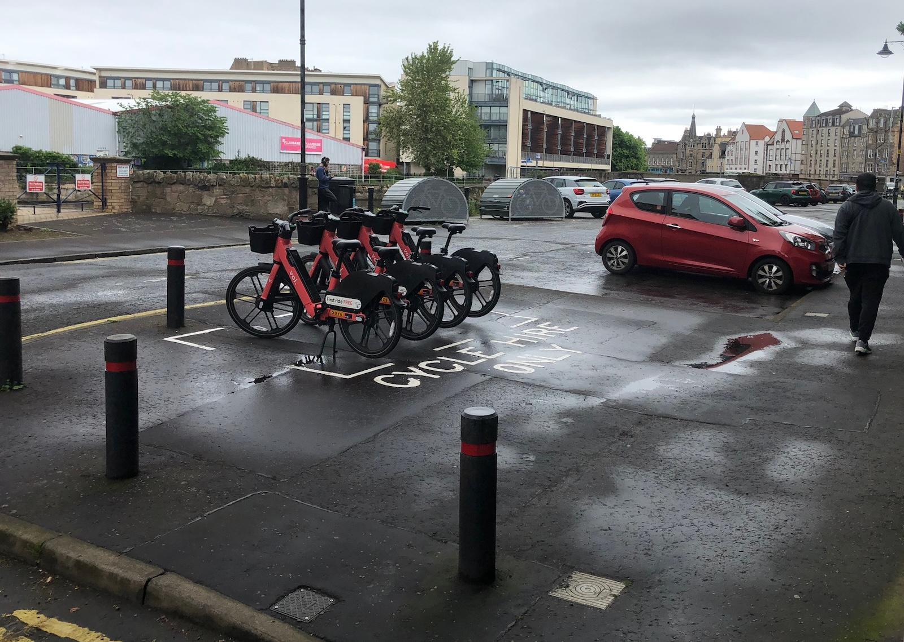

🗳️ September's 'Full Council' meeting roundup
As well as our bi-monthly coverage of the City of Edinburgh Council's Transport & Environment Committee, we also keep an eye on cycling-adjacent items at 'full council' meetings; on Thursday 17th September, the council once more convened at the City Chambers.
There were barely any items on the main agenda relating to our cycling, safer streets and wider transport coverage - but there were a number of interesting bits lurking, as always, in the 'Questions and Answers'.
📆 Meeting Page | 📺 Webcast | 📑 Motions & Amendments [PDF] | 🙋🏽 Questions & Answers [PDF]
⬇️ Jump to:
- 🗳️ By-elections in Southside/Newington and Craigmillar/Portobello, plus Council Committees »
- 💸 Edinburgh Visitor Levy: New Projects »
- 🅿️ Question: Cycle Hire Only Bays »
- 🚲 Question: Voi Bike Stations »
- 💬 Question: Communicating Road and Pavement Improvements »
- 🌳 Question: St Mark's Park Bridge »
- 🚧 Question: Road User Charging Discussions »
- 💨 Question: The Impact of the LEZ on Air Quality in Edinburgh »
- 🚋 Question: Stabling at Newhaven Terminus »
📑 Reports
🗳️ 7.1 By-elections - 3 September 2026 - Southside/Newington (Ward 15) and Craigmillar/Portobello (Ward 17) and Political Composition of the Council and its Committees
📄 Report [PDF]
📺 Webcast from 2h 8m 50s
This report is a fairly standard bit of business recognising that Ruth Elliot (Labour) has been elected as a Labour councillor for Southside / Newington and that Lorenzo Martinico (Green) has been elected as a councillor for Craigmillar / Portobello. As mentioned previously, both are cyclists and strong proponents of Active Travel - as well as, noted by Council Leader Cllr Jane Meagher in moving the report, two young people, a demographic often under-represented in local democracy.
As recognised in the report, the political makeup of committee positions doesn't need to shift based on the new makeup of the council as a result (number of seats held by each party is on page 2).
In seconding, Cllr Mandy Watson pointed out it's a shame for both new Councillors that there's such a short window of time before they'll be back out campaigning again in the 2027 local elections!
Earlier in the meeting - on a business-as-usual item regarding committee appointments - amendments from the Green and Labour groups appointed both new Councillors to the Transport & Environment Committee, replacing Cllr Conor Savage (Labour) and Cllr Ross McKenzie (Green) - so we'll be hearing from them before long!
As Edinburgh Bus Users Group quipped on Bluesky - "An unusually harsh initiation ritual."
💸 7.7 Edinburgh Visitor Levy: New Projects - referral from the Transport and Environment Committee
📄 Report [PDF]
📺 Webcast from 3h 34m 35s
This item returns the list of 'Visitor Levy'-funded projects under the Transport Committee's purview back to full council for final approval, including transport links for the Edinburgh International Climbing Arena and Lost Shore Surf resort in Ratho, funding for public realm works on Princes Street and George Street, and funding at long last for The Causey, who have relentlessly fought for a more habitable public space for residents and visitors on their patch at West Crosscauseway - since 2007!
This item passed without amendment or much fanfare, save for the first contribution of new councillor Ruth Elliot for Labour, and we were delighted to see a classic Edinburgh active travel proponent statistic rolled out in her seconding of the report:
"As everyday life becomes more and more expensive, it is so important that there are spaces in the city where people can spend time without spending money.
"The Causey have been holding community events for over a decade and transforming this space would allow people to convene more spontaneously and more safely without the traffic coming through.
"As one of the 38% of Edinburgh's households who do not own a car, I understand how important it is to make safe routes and safe spaces for walking, cycling, wheelchair users and parents with buggies.
"I think this is a fantastic project, and it will bring huge benefits to the Southside." — Cllr Ruth Elliot
🙋🏽 Questions & Answers
Questions are submitted ahead of the meeting and answered on paper by the relevant committee Convener and Council Officers; they're not debated or discussed in the meeting itself.
🅿️ 10.2 By Councillor Caldwell - Cycle Hire Only Bays
📄 Question & Answer [PDF, page 6]
You might be aware of our campaign to get Voi hire bikes out of cycle parking - as well as our contributions to the 'teething issues' stakeholder workshop held earlier this year.
One of the biggest factors in this being dealt with - along with being the solution to a host of other accessibility, pedestrian space and 'clutter' issues caused by the geofenced docking 'zones' not being as narrow as would be ideal - has been a trial of marked, painted zones for parking the hire cycles in.

At the time of the stakeholder workshop, this was a limited trial of around 22 spaces. However, according to the answer on this item, the Council hopes to paint zone markings at a total of one hundred parking locations by the end of 2026 - which is fantastic news in moving towards mitigating the few issues an otherwise very successful and useful scheme has created.
🚲 10.7 By Councillor Osler - Voi Bike Stations
📄 Question & Answer [PDF, page 13]
A question like this a full year into the trial of the hire bike scheme in Edinburgh feels... odd.
The Council officers at the helm of rolling out the scheme and interfacing with supplier Voi are highly approachable, proactive and receptive to feedback — one might imagine even more so to enquiries from Councillors! — and we'd felt many aspects of this question were already somewhat in the public domain.
But, it's on the record now. The reality is that the majority of parking locations for the scheme have been carefully picked out in liaison with the council so as to not elicit complaints from residents, and the Officers involved have been quite proactive already at moving or adjusting problematic locations... so maybe my gut instinct is right and this is just a classic Lib Dem wedge issue fishing expedition 🎣
💬 10.11 By Councillor Ross - Communicating Road and Pavement Improvements
📄 Question & Answer [PDF, page 20]
Interesting to hear of plans to better communicate investment and maintenance — in the form of road resurfacing or other conditioning / patching projects — as a map on the council's website in the near future.
The unsaid part of this 'work to improve communication' is that in reality, frustrations around round closures and communication of them aren't really about the works to maintain the roads, they're about how fundamentally congested the city is because of car dominance and underinvestment / underprioritisation of other modes — as well as Schrödinger's pothole, road damage that you'll complain about at length until it's time to moan about the road being closed to fix it.
🌳 10.12 By Councillor Booth - St Mark's Park Bridge
📄 Question & Answer [PDF, page 21]
Officers are "actively looking at options for a temporary diversion path" — and will also consider whether or not the Powderhall Rail underbridge that crosses the Water of Leith just by Redbraes Park could be an option for access too.
Of course, there's a number of factors at play there - but a recent site visit by Councillors, Officers & MSPs with Network Rail, relating to the Powderhall Link project is another sign of life in that neck of the woods...
🚧 10.13 By Councillor Booth - Road User Charging Discussions
📄 Question & Answer [PDF, page 22]
Edinburgh - and Glasgow too - would quite like to introduce 'Road User Charging' or by another name, a congestion charge. In Edinburgh, the council has only continued to induce commuting into the city by failing to implement a Workplace Parking Levy, and talks were ongoing between the two local authorities as well as the regional transport body SESTran to lay the groundwork for a potential congestion charge introduction once the legislation was checked over by Transport Scotland.
This question follows up on that work, which has then come to a screeching halt following the news on Friday that the work on this being undertaken by Transport Scotland has been canned. A spokesperson said:
“We are committed to reducing transport emissions and providing alternatives to the car. That is why we have removed peak rail fares for good, are supporting free bus travel for 2.4 million people and will deliver a nationwide £2 bus fare cap by the end of this parliament.”
All carrot and no stick does nothing to shift the transport mix, and this is a hugely retrograde step by a government claiming to be committed to "providing alternatives to the car", especially when any and all alternatives are suffering under the weight of urban congestion making them less appealing.
💨 10.14 By Councillor Booth - The Impact of the LEZ on Air Quality in Edinburgh
📄 Question & Answer [PDF, page 23]
Slightly uninteresting, except to note (reading between the lines) what could perhaps be described as a lack of ambition to double down on the benefits of the existing Low Emissions Zone.
🚋 10.15 By Councillor Aston - Stabling at Newhaven Terminus
📄 Question & Answer [PDF, page 24]
Some of the stooshie around the prolonged closure of the Tram line between Princes Street and Newhaven came down to not only a lack of resilience — to keep the tram running from both ends and only continuity at the section that was closed following the fire at the former Debenham's store — but the perception that a lack of 'stabling' for the tram at Newhaven was set to have been part of that phase of network delivery, and seemed to have not been delivered.
The answers here get into the details - no particular decision was made to abandon a facility at Newhaven, and multiple sidings were indeed built to hold trams there — but instead it transpires that it was never envisioned as a complete alternative to the western depot by Edinburgh Gateway and is not set up for the safety checks a tram has to undergo before running on the network, so didn't provide the second holding location that would have been required to keep trams running through Leith.
Perhaps this answer, along with the report underway into city centre resilience, will lead to the commissioning of a 'proper' depot at Newhaven in the years to come.
✨ Donate to edi.bike: